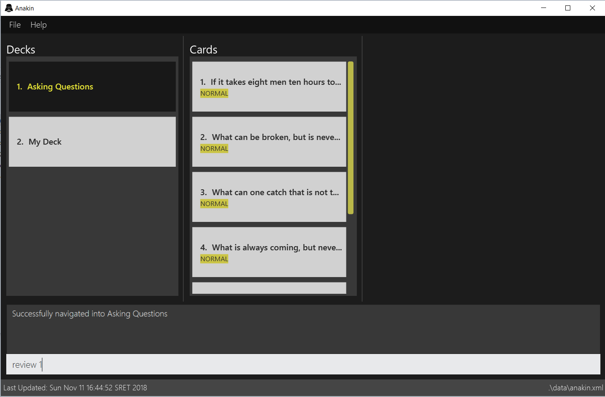
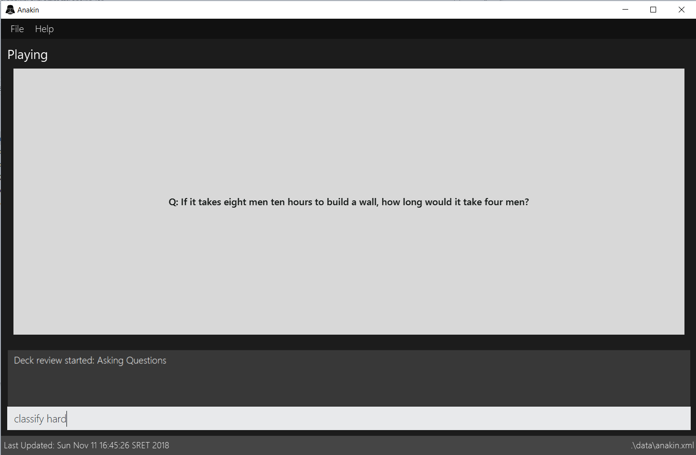
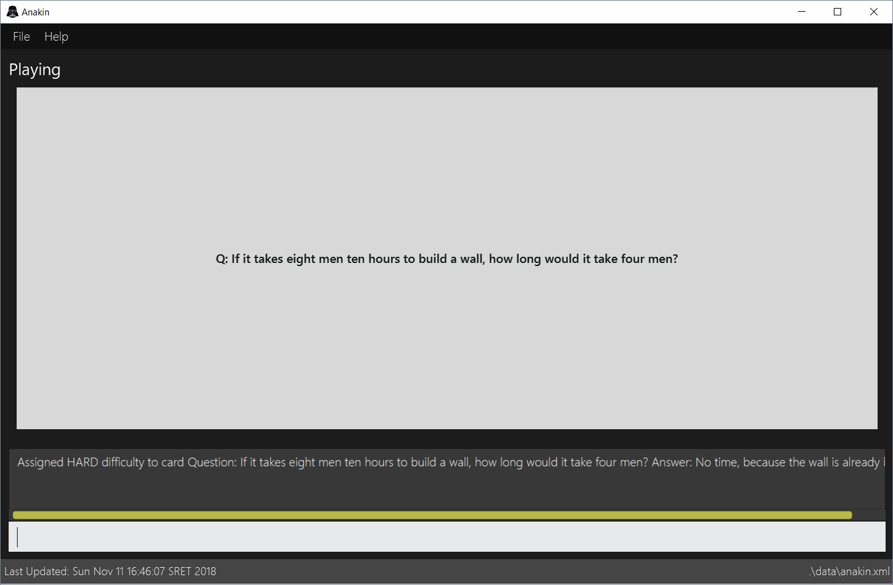
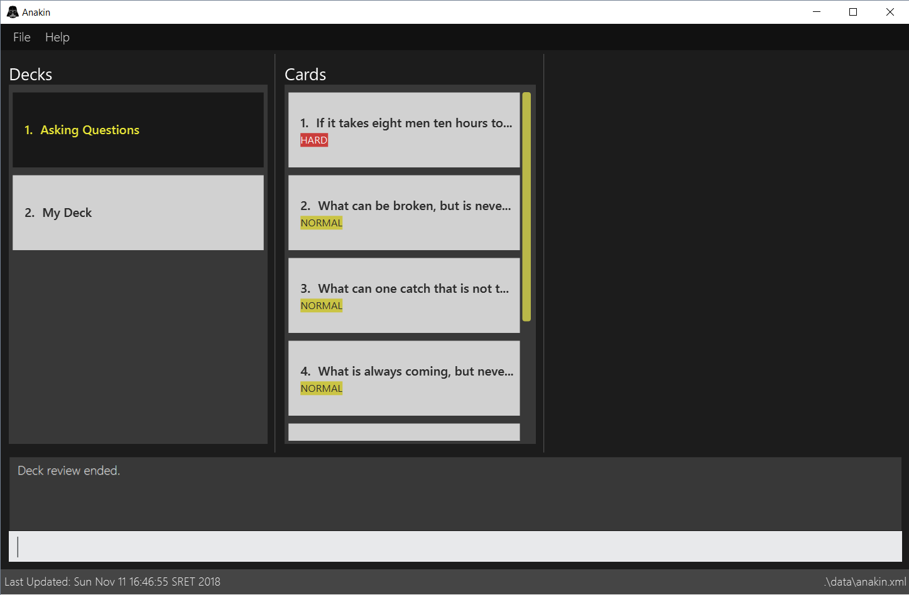

Overview
This project portfolio page serves to document my contributions to the Anakin project.
Anakin is a desktop flashcard management application created by team T09-2 to solve the inherent problems associated with physical flashcards. It aims to facilitate quick and intuitive management of virtual flashcards as well as the sharing of flashcard decks. Additionally, it features the ability to rate the difficulty of individual flashcards and a scheduling algorithm that prompts reviews of cards based on their difficulty rating.
Team T09-2 consisted of myself, Joel Lee, Tay Yu Jia, David Goh, and Truong Thanh.

The user interacts with Anakin using a command-line interface, and has a GUI created with JavaFX. Anakin is written in Java, and has about 10 kLoC.
Anakin’s codebase draws from SE-EDU's AddressBook Level 4.
Summary of contributions
Preface
This section summarizes my contributions to the project in terms of code I have written, as well as other general areas which had a positive impact on the function of the product (e.g. code reviews, bug fixes).
-
Code contributed: GitHub
-
Area of Responsibility: Storage
-
I was in charge of the Storage component in this project, and handled the initial adaptation of AddressBook’s storage component for use with Anakin. I served as the subject matter expert for any queries my team had for this area.
-
The Storage component allows you to save the data you have in Anakin on a seperate file, and also supports the loading of external data from a file into Anakin. Essentially, it acts as the bridge between disk (file) storage and program memory, containing functions to convert Anakin state to and from XML files.
-
This allowed Anakin to be portable and persistent. You will no longer have to worry about losing your precious data after closing the Anakin program.
-
-
Major enhancement:
-
Added the ability to track user performance
-
I implemented the
classifyfeature which allows you to classify your cards into various difficulties. In the background, I also tracked the number of times you have classified each card. This feature allows you to note which cards you struggled the most with, or found relatively easy. Besides documentation purposes, this feature also paves the way for card scheduling based on your performance. This is implemented in Anakin’sschedulefeature, where cards that the user is struggling with will show up more often for review. This personalization is what truly differentiates Anakin as a smart flashcard manager.
-
-
-
Minor enhancement:
-
Implement card creation and deletion: I implemented the ability to create a new card in a deck with the given question and answer, as well as the ability to delete cards from decks.
-
-
Other contributions:
-
I drafted the initial architecture of the Model interface
-
I wrote tests for the Storage component as well as other utility functions
-
Community:
-
I reviewed the following pull requests of my team, and provided insightful review comments: #146, #140
-
I created the following issues in the issue tracker of the project to report bugs I have discovered as well as make suggestions for new features or ways to implement existing features. (Issues: #187, #119, #143, #82, #64)
-
-
Contributions to the User Guide
Given below are sections I contributed to the User Guide. They showcase my ability to write documentation targeting end-users. |
Card difficulty classification : classify
Allocates a difficulty (easy, normal, hard) to the card currently being reviewed.
This indicates how you felt about the difficulty of the card, relative to your performance. This rating will be taken
into consideration when scheduling cards for review. For example, a card rated easy will show up less often compared
to a card rated hard.
Format: classify DIFFICULTY
Example
-
You decide to review a deck.
 -
You encounter a difficult question. You would like to document this for future revision. Simply type in
classify, followed by the desired difficulty (in this case,hard). -
Upon ending the review, you should be able to see the updated difficulty classification on your cards.

Contributions to the Developer Guide
Given below are sections I contributed to the Developer Guide. They showcase my ability to write technical documentation and the technical depth of my contributions to the project. |
Storage component
This section details the Storage component, which is the bridge between internal application state and external files.
API : Storage.java
The Storage component,
-
can store
UserPrefobjects in json format and read it back -
can save Anakin’s data in XML format and read it back
Performance Tracking Implementation
This section details the implementation details and considerations of the performance tracking feature.
Current Implementation
Cards contain the Performance parameter, implemented as an enum, as well as a timesReviewed counter. The fields
are set to normal difficulty and 0 counts respectively on initialization. Since these are metadata fields, they
will be considered optional and a Card can still be created without specifying them, which will result in the
fields being reset to the default initializations.
The user can change the difficulty of a card during "review" mode. Users can only do this on the card they are
currently reviewing, as it is the only time it makes sense to do so. Cards assigned a difficulty will have their
timesReviewed counter incremented by one.
The command available to the user will be classify DIFFICULTY, where DIFFICULTY is any of the strings
easy, normal, hard, corresponding to the level of perceived difficulty for that
flashcard.
Given below is an example usage scenario for the performance tracking feature.
Step 1. The user requests to "review" a deck. He sees the question of card A from the deck.
Step 2. The user requests to see the answer. He sees the displayed answer.
Step 3. The user executes classify hard. Card A is now assigned the difficulty of hard.
Step 4. The user continues reviewing the rest of the cards in the deck.
Step 5. Card A is shown to the user more regularly when he reviews the same deck in the future.